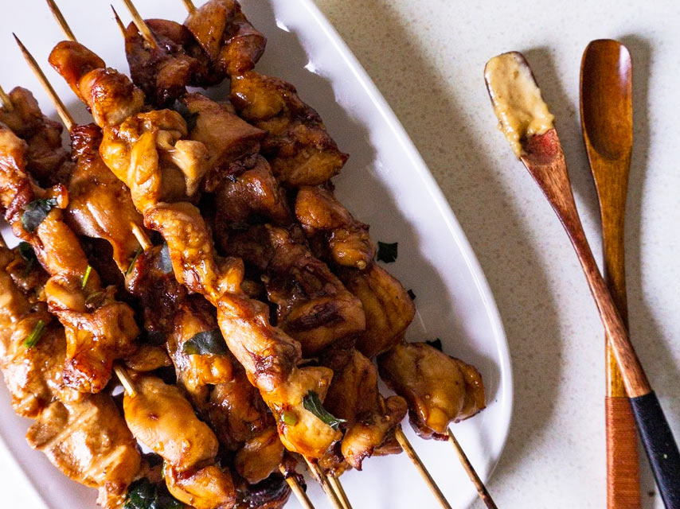

Poulet Satay Mauricienne
Satay de Poulet Mauricienne

Description
Le poulet Satay est un apéritif très populaire en Asie. Les morceaux de poulet sont marinés dans des épices,
en brochettes et servis avec une sauce, la sauce cacahuète étant la préférée. Cette recette est une variante plus
saine par rapport à la traditionnelle, remplaçant le sucre.
Ingredients
Satay de poulet:
- 600 g de cuisses de poulet - désossées, coupées en cubes
- 2 gousses d'ail, écrasées, 1 piment haché
- 4-5 c. À soupe de sauce soja noire
- 2 c. À soupe d'huile de noix de coco (ou d'huile de sésame)
- 1-2 c. À thé de miel (ou 2 c. À thé de sucre brun)
- brochettes de bois
Sauce Satay:
- 2 cuillère à soupe d'huile de noix de coco
- Moitié d'un petit oignon haché,1 piment vert haché
- 1 gousse d'ail écrasée
- 150g de beurre d'arachide (100% d'arachide)
- 1 cuillère à café de miel
- 200 ml de lait de coco
- Sauce de soja au besoin
Steps
- Marinade:
- Mélangez l'ail, le piment, la sauce de soja, l'huile de coco, miel et versez dans un récipient à fond plat.
- Mélangez les cubes de poulet à la sauce.
- Couvrez avec du film alimentaire et laissez reposer au réfrigérateur jusqu’à ce que la sauce soit prête.
- Sauce Satay:
- Chauffer l'huile de noix de coco dans une casserole à feu moyen. Ajoutez l'oignon, le piment et l'ail.
- Mettre sur feu doux.
- Ajoutez le beurre de cacahuète et le miel. Mélangez rapidement et ne laissez pas le fond brûler.
- Une fois que tout commence à se mettre en place, transférez-le rapidement dans un mélangeur ou processeur.
- Ajouter le lait de coco et mélanger.
- Si la sauce est trop épaisse, vous pouvez alléger le mélange avec un peu plus de lait de coco.
- Verser dans un plat ou pot et mettre de côté.
- Assemblage:
- Lorsque la sauce est prête, enlever le poulet du réfrigérateur. Enfilez les cubes de poulet sur les brochettes.
- Placez sur une grille sur une plaque à pâtisserie.
- Tournez le gril sur moyen-élevé.
- Griller les brochettes pendant environ 10 minutes, jusqu'à ce qu'il soit bien doré. Enlever du gril.
- Retournez-les et cuisez pour 10 minutes de plus.
Home